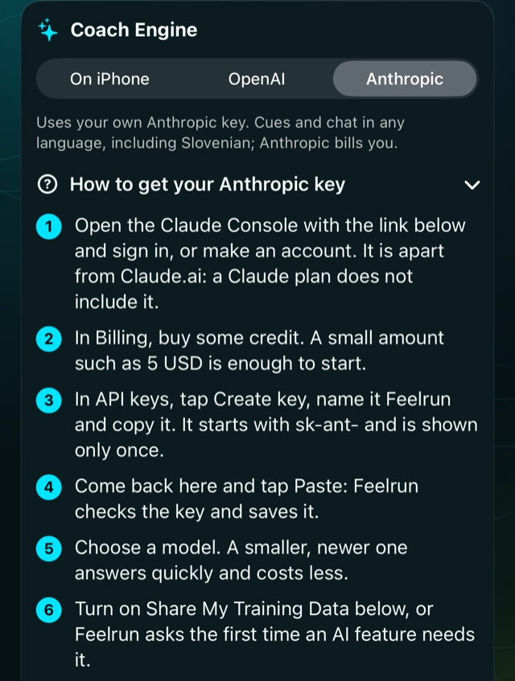
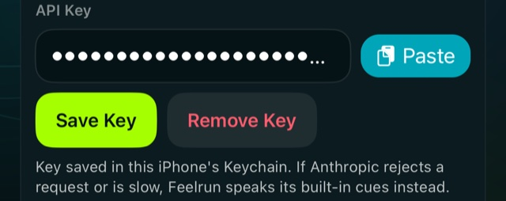
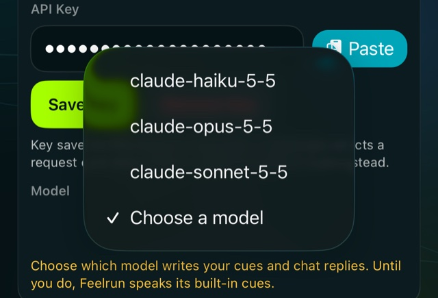
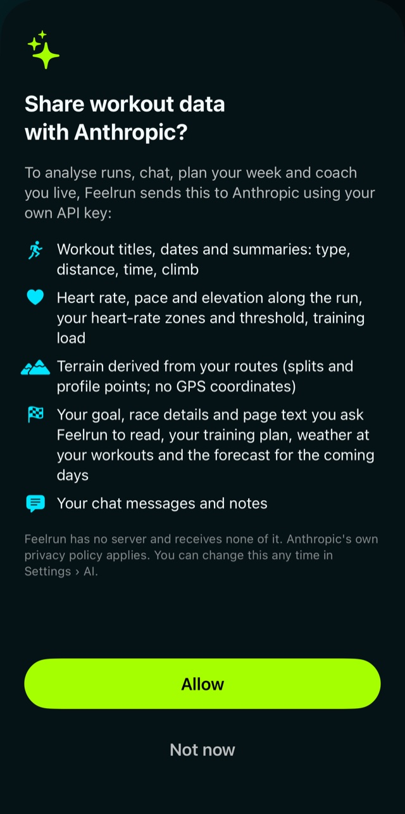
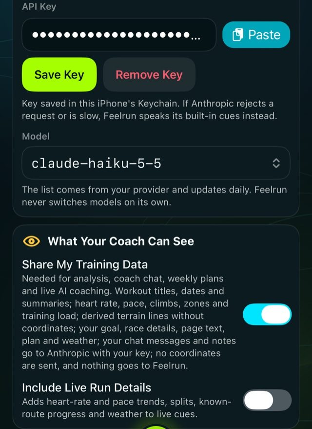
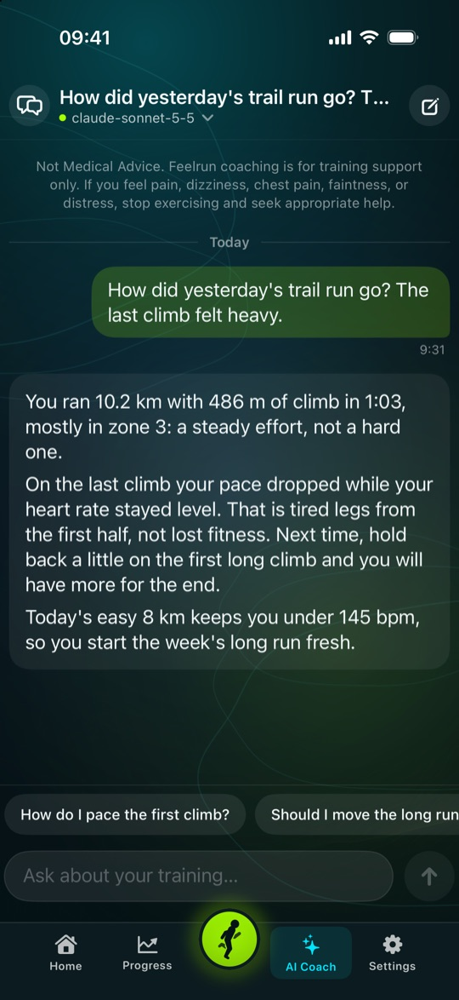

Settings › AI
Your own AI key
Feelrun's AI coach writes your cues during a run, analyses your runs, answers in the chat and plans your weeks, with OpenAI or Anthropic and under your own account. Setting it up takes about five minutes.
What it is, and what it costs
- Feelrun has no server and sells no AI. Your iPhone sends each request straight to the provider with your key, which stays in your iPhone's Keychain.
- A ChatGPT or Claude subscription does not include a key. The key comes from the provider's developer site, which is a separate account.
- The provider bills that account for what Feelrun asks. You add credit first; a small amount such as 5 USD is enough to start, and you can set a spending limit there.
- The AI coach is open in the free 30 days and with Feelrun Pro. Without a key, Feelrun still speaks its built-in cues during your runs.
-
Choose your provider in Feelrun
Open Settings › AI and under Coach Engine choose OpenAI or Anthropic. Feelrun shows these same steps there, with links to the provider's pages.

-
Make an account and add credit
OpenAI
Open the OpenAI Platform and sign in, or make an account. In Billing, add a card and some credit. With auto recharge off, no more is ever taken.
Anthropic
Open the Claude Console and sign in, or make an account. In Billing, buy some credit.
-
Create the key and copy it
OpenAI
In API keys, tap Create new secret key, name it Feelrun and copy it. It starts with
sk-.Anthropic
In API keys, tap Create key, name it Feelrun and copy it. It starts with
sk-ant-.The key is shown only once. If it is lost, make a new one and delete the old one. Do not send it to anyone, Feelrun's support included.
-
Paste it into Feelrun
Back in Settings › AI, tap Paste next to the key field. Feelrun checks the key and saves it in your iPhone's Keychain.

-
Choose a model
The list comes from your provider. A smaller, newer model answers quickly and costs less; a larger one writes longer analyses. Feelrun never changes your choice on its own.

-
Allow your training data to be shared
Turn on Share My Training Data, or tap Allow when Feelrun asks the first time an AI feature needs it. It says what goes to the provider: workout summaries, heart rate, pace and climbs, your goal and plan, your chat. No GPS coordinates are sent, and nothing goes to Feelrun. You can turn it off at any time.


-
Ready
Ask the AI Coach tab about your training, or open a run and tap Analysis. During your next run the cues are written for you.

If something goes wrong
- Feelrun says the key looks wrong. Copy it again in full. An OpenAI key starts with
sk-, an Anthropic key withsk-ant-; check that the right provider is chosen under Coach Engine. - The model list is empty. Save the key first: the list is loaded from the provider with it.
- The coach says the provider refused. Check that the account still has credit and that the key was not deleted on the provider's page; then choose the model again.
- The AI features are locked. After the free 30 days they need Feelrun Pro (Settings › General › Feelrun Pro).
Stopping
Tap Remove Key in Settings › AI. To end it at the provider too, delete the key on its API keys page. Feelrun then speaks its built-in cues again.
More help: Support, or write to feelrunapp@gmail.com.